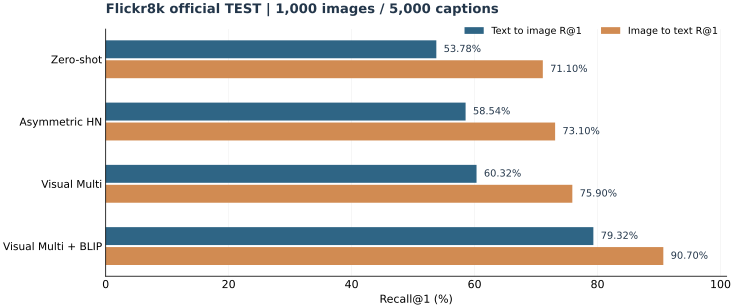
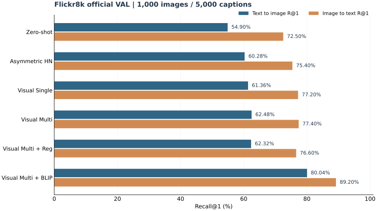

FINAL TEST · FLICKR8K
CLIP × BLIP 多模态检索
视觉侧多正样本适配 → CLIP Top-10 快速召回 → BLIP 细粒度图文匹配重排序
测试库：1000 张图 / 5000 条 Caption。由验证集确定最优配置。
文搜图 R@179.32%测试集
图搜文 R@190.70%测试集
双向 Mean R@185.01%相对原始 CLIP +22.57 个百分点
正式测试集
| 方法 | 文搜图 R@1 | 图搜文 R@1 | Mean R@1 |
|---|---|---|---|
| Zero-shot | 53.78% | 71.10% | 62.44% |
| Projection FT | 55.04% | 70.30% | 62.67% |
| HN 0.2 Best Epoch | 55.14% | 70.10% | 62.62% |
| Asymmetric HN | 58.54% | 73.10% | 65.82% |
| Visual Multi | 60.32% | 75.90% | 68.11% |
| Visual Multi + BLIP | 79.32% | 90.70% | 85.01% |

验证集消融

以上为检索 Recall@1，不是分类准确率。Web 展示索引为 8000 图 / 40000 Caption，与测试阶段候选库规模不同。BLIP 是额外预训练匹配模型；0.19～0.20 秒为 BLIP Top-10 增量重排序时间。